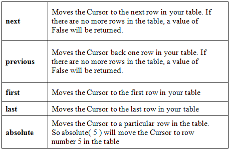
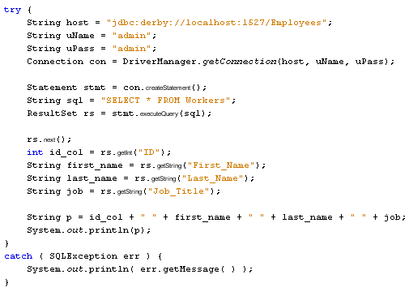
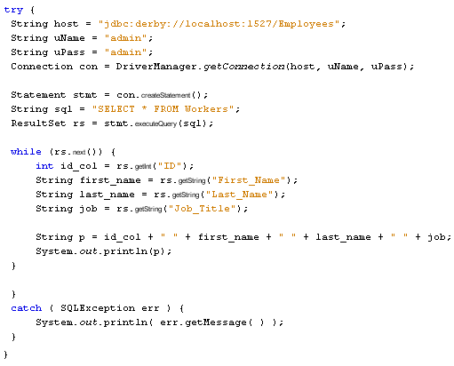
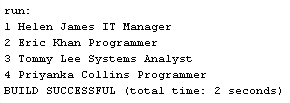

Now that you have connected to the database, the next step is to access the table in your database. For this, you need to execute a SQL Statement, and then manipulate all the rows and columns that were returned.
To execute a SQL statement on your table, you set up a Statement object. So add this import line to the top of your code:
import java.sql.Statement;
In the try part of the try … catch block add the following line (add it just below your Connection line):
Statement stmt = con.createStatement( );
Here, we're creating a Statement object called stmt. The Statement object needs a Connection object, with the createStatment method.
We also need a SQL Statement for the Statement object to execute. So add this line to your code:
String SQL = "SELECT * FROM Workers";
The above statement selects all the records from the database table called Workers.
We can pass this SQL query to a method of the Statement object called executeQuery. The Statement object will then go to work gathering all the records that match our query.
However, the executeQuery method returns all the records in something called a ResultSet. Before we explain what these are, add the following import line to the top of your code:
import java.sql.ResultSet;
Now add this line just below your SQL String line:
ResultSet rs = stmt.executeQuery( SQL );
So our ResultSet object is called rs. This will hold all the records from the database table. Before we go any further, though, here's an explanation of what ResultSets are.
A ResultSet is a way to store and manipulate the records returned from a SQL query. ResultSets come in three different types. The type you use depends on what you want to do with the data:
Type number 1 on the list above is called a TYPE_FORWARD_ONLY ResultSet. Number 2 on the list is a TYPE_SCROLL_SENSITIVE ResultSet. The third ResultSet option is called TYPE_SCROLL_INSENSITIVE.
The ResultSet type goes between the round brackets of createStement:
Statement stmt = con.createStatement( );
Because we've left the round brackets empty, we'll get the default RecordSet, which is TYPE_FORWARD_ONLY. In the next section, we'll use one of the other types. But you use them like this:
Statement stmt = con.createStatement( RecordSet.TYPE_SCROLL_SENSITIVE );
So you first type the word RecordSet. After a dot, you add the RecordSet type you want to use.
However, it doesn't end there. If you want to use TYPE_SCROLL_SENSITIVE or TYPE_SCROLL_INSENSITIVE you also need to specify whether the ResultSet is Read Only or whether it is Updatable. You do this with two built-in constants: CONCUR_READ_ONLY and CONCUR_UPDATABLE. Again, these come after the word RecordSet:
ResultSet.CONCUR_READ_ONLY
ResultSet.CONCUR_UPDATABLE
This leads to a rather long line of code:
Statement stmt = con.createStatement( RecordSet.TYPE_SCROLL_SENSITIVE, ResultSet.CONCUR_UPDATABLE);
One more thing to get used to with ResultSets is something called a Cursor. A Cursor is really just a pointer to a table row. When you first load the records into a ResultSet, the Cursor is pointing to just before the first row in the table. You then use methods to manipulate the Cursor. But the idea is to identify a particular row in your table.
Once you have all the records in a Results set, there are methods you can use to manipulate your records. Here are the methods you'll use most often:

The ResultSet also has methods you can use to identify a particular column (field) in a row. You can do so either by using the name of the column, or by using its index number. For our Workers table we set up four columns. They had the following names: ID, First_Name, Last_Name, and Job_Title. The index numbers are therefore 1, 2, 3, 4.
We set up the ID column to hold Integer values. The method you use to get at integer values in a column is getInt:
int id_col = rs.getInt("ID");
Here, we've set up an integer variable called id_col. We then use the getInt method of our ResultSet object, which is called rs. In between the round brackets, we have the name of the column. We could use the Index number instead:
int id_col = rs.getInt(1);
Notice that the Index number doesn't have quote marks, but the name does.
For the other three columns in our database table, we set them up to hold Strings. We, therefore, need the getString method:
String first_name = rs.getString("First_Name");
Or we could use the Index number:
String first_name = rs.getString(2);
Because the ResultSet Cursor is pointing to just before the first record when the data is loaded, we need to use the next method to move to the first row. The following code will get the first record from the table:
rs.next( );
int id_col = rs.getInt("ID");
String first_name = rs.getString("First_Name");
String last_name = rs.getString("Last_Name");
String job = rs.getString("Job_Title");
Notice that rs.next comes first in this code. This will move the Cursor to the first record in the table.
You can add a print line to your code to display the record in the Output window:
System.out.println( id_col + " " + first_name + " " + last_name + " " + job );
Here's what your code should look like now (we've adapted the print line because it's a bit too long):

If you want to go through all the records in the table, you can use a loop. Because the next method returns true or false, you can use it as the condition for a while loop:
while ( rs.next( ) ) {
}
In between the round brackets of while we have rs.next. This will be true as long as the Cursor hasn't gone past the last record in the table. If it has, rs.next will return a value of false, and the while loop will end. Using rs.next like this will also move the Cursor along one record at a time. Here's the same code as above, but using a while loop instead. Change your code to match:

When you run the above code, the Output window should display the following:

Now that you have an idea of how to connect to a database table and display records we'll move on and write a more complex programme using forms and buttons to scroll through the records.